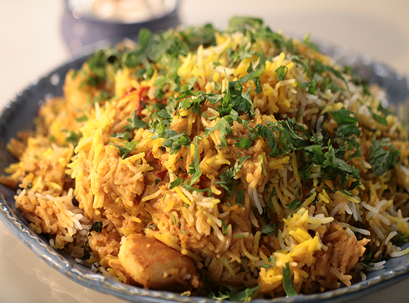

Dum Aloo Biryani

Description
Why is it that when you are stuck at “what should we cook today” the answer is always “make some aloo!” Potatoes are like this…extremely popular and have multipurpose usage.
And did you always think that eating a potato will make you fat? Well, don’t – it is a surprising source of vitamin C and provides useful amounts of starch, thiamine and niacin and around a hundred grams will provide about eighty calories.
Ingredients
- Potatoes peeled 10-12 small
- Biryani rice ¾ cooked 3 cups
- Salt to taste
- Oil for shallow frying
- Yogurt 2 cups
- Red chilli powder 2 teaspoons
- Green cardamom powder 1/2 teaspoon
- Dried ginger powder (soonth) 1 teaspoon
- Fennel seed (saunf) powder 1 teaspoon
- Mustard oil 2 tablespoons
- Clove powder 1 teaspoon
- Asafoetida 1/2 teaspoon
- Garam masala 1 1/2 teaspoon
- Cumin powder 1/2 teaspoon
- Saffron soaked in 3 tbsps milk a pinch
- Fresh coriander leaves chopped + garnish 2 tablespoons
- Fresh mint leaves chopped + garnish 2 tablespoons
- Ginger cut into thin strips + garnish 1 inch
- Raita to serve
Steps
- Take sufficient water in a bowl, add salt and mix well. Prick the potatoes all over with a toothpick and soak them in this bowl. Keep aside for 15 minutes. Drain and place them on an absorbent paper and wipe dry.
- Heat sufficient oil in deep non-stick pan, add the potatoes shallow-fry the potatoes on medium heat till golden and crisp. Drain on absorbent paper
- Take yogurt in a bowl, add red chilli powder, green cardamom powder, dried ginger powder, fennel powder and salt and whisk well.
- Heat mustard oil in the same pan and till it smokes. Add clove powder and asafetida and mix well. Add yogurt mixture, mix well and cook for 1-2 minutes. Add 1 cup water, mix well, cover and cook for 1-2 minutes.
- Add potatoes and mix well. Cook for 1-2 minutes. Add 1 tsp garam masala powder and cumin powder and mix well.
- Spread the rice on top evenly. Drizzle saffron milk, sprinkle remaining garam masala powder, coriander leaves, mint leaves and ginger strips.
- Cover the pan with 2 layers of aluminum foil and place the lid on. Cook on low heat for 20-25 minutes.
- Remove the foil and transfer the biryani into a serving dish. Garnish with coriander leaves, mint leaves and ginger strips and serve hot with a raita of your choice
Credit: All the content is completely copied from here.